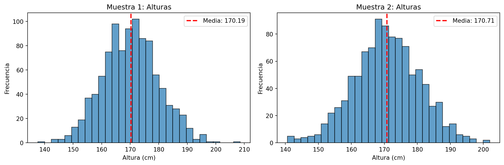
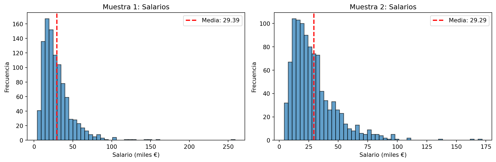
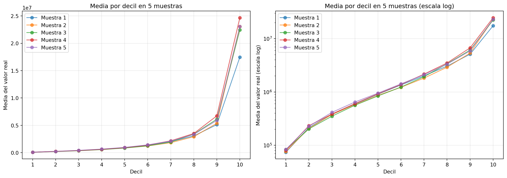
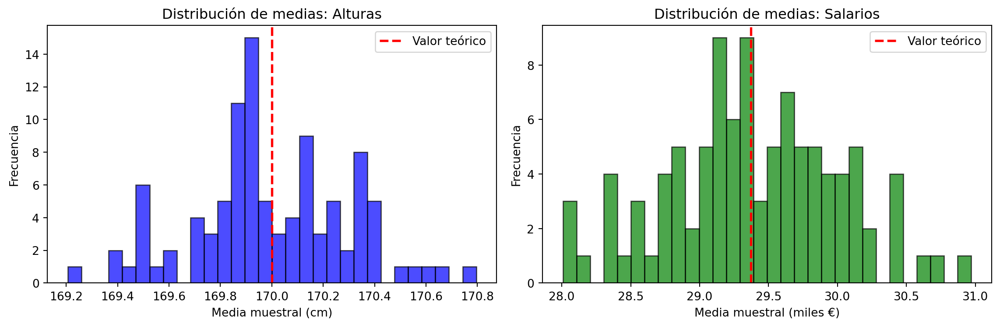
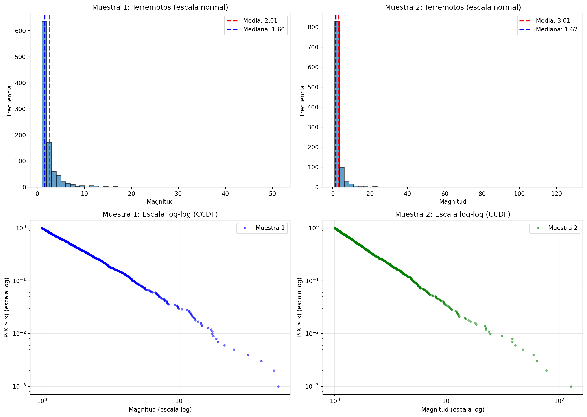
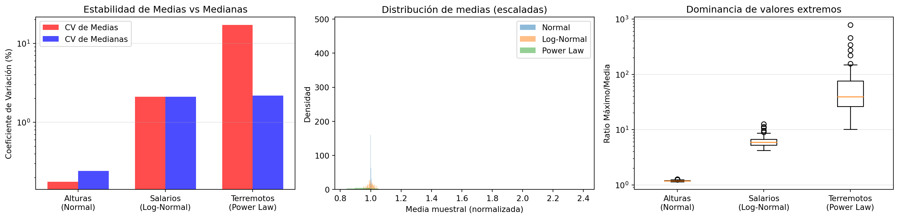

import numpy as np
import matplotlib.pyplot as plt
np.random.seed(42)Cálculo de medias con distribuciones tramposas
exploraciones
Ya te habrán dicho que la media es sensible a valores extremos. Te cuento cómo ocurre esto y cómo lo puedes arreglar (sin mediana ni tonterías)
Introducción
La media es uno de los estadísticos más utilizados, pero también uno de los más sensibles a la distribución subyacente de los datos. Vamos a ver cómo las distribuciones con colas pesadas (como la log-normal) pueden hacer que la media sea muy inestable, mientras que las distribuciones más simétricas (como la normal) producen medias más estables.
Caso 1: Distribución Normal (Alturas)
Empezamos con algo que sabemos que se comporta bien: las alturas de individuos. Estas siguen aproximadamente una distribución normal.
# Primera muestra de alturas (en cm)
# Media de 170 cm, desviación estándar de 10 cm
alturas_muestra1 = np.random.normal(loc=170, scale=10, size=1000)
media_alturas1 = np.mean(alturas_muestra1)
print(f"Media de la primera muestra de alturas: {media_alturas1:.2f} cm")Media de la primera muestra de alturas: 170.19 cm# Segunda muestra de alturas
alturas_muestra2 = np.random.normal(loc=170, scale=10, size=1000)
media_alturas2 = np.mean(alturas_muestra2)
print(f"Media de la segunda muestra de alturas: {media_alturas2:.2f} cm")
print(f"Diferencia entre medias: {abs(media_alturas2 - media_alturas1):.2f} cm")Media de la segunda muestra de alturas: 170.71 cm
Diferencia entre medias: 0.52 cm# Visualización
fig, axes = plt.subplots(1, 2, figsize=(12, 4))
axes[0].hist(alturas_muestra1, bins=30, alpha=0.7, edgecolor='black')
axes[0].axvline(media_alturas1, color='red', linestyle='--', linewidth=2, label=f'Media: {media_alturas1:.2f}')
axes[0].set_xlabel('Altura (cm)')
axes[0].set_ylabel('Frecuencia')
axes[0].set_title('Muestra 1: Alturas')
axes[0].legend()
axes[1].hist(alturas_muestra2, bins=30, alpha=0.7, edgecolor='black')
axes[1].axvline(media_alturas2, color='red', linestyle='--', linewidth=2, label=f'Media: {media_alturas2:.2f}')
axes[1].set_xlabel('Altura (cm)')
axes[1].set_ylabel('Frecuencia')
axes[1].set_title('Muestra 2: Alturas')
axes[1].legend()
plt.tight_layout()
plt.show()
Como puedes ver, las medias son muy similares entre sí y cercanas al valor real de 170 cm. La distribución normal hace que la media sea un estadístico estable.
Caso 2: Distribución Log-Normal (Salarios)
Ahora vamos con algo más interesante: salarios anuales. Los salarios no siguen una distribución normal, sino una distribución log-normal (hay muchas personas con salarios bajos o medios, y pocas con salarios muy altos).
# Primera muestra de salarios (en miles de euros)
# Usamos log-normal: la mayoría gana poco, algunos ganan mucho
salarios_muestra1 = np.random.lognormal(mean=3.2, sigma=0.6, size=1000)
media_salarios1 = np.mean(salarios_muestra1)
print(f"Media de la primera muestra de salarios: {media_salarios1:.2f} mil €")Media de la primera muestra de salarios: 29.39 mil €# Segunda muestra de salarios
salarios_muestra2 = np.random.lognormal(mean=3.2, sigma=0.6, size=1000)
media_salarios2 = np.mean(salarios_muestra2)
print(f"Media de la segunda muestra de salarios: {media_salarios2:.2f} mil €")
print(f"Diferencia entre medias: {abs(media_salarios2 - media_salarios1):.2f} mil €")
print(f"Diferencia relativa: {abs(media_salarios2 - media_salarios1) / media_salarios1 * 100:.1f}%")Media de la segunda muestra de salarios: 29.29 mil €
Diferencia entre medias: 0.10 mil €
Diferencia relativa: 0.4%# Visualización
fig, axes = plt.subplots(1, 2, figsize=(12, 4))
axes[0].hist(salarios_muestra1, bins=50, alpha=0.7, edgecolor='black')
axes[0].axvline(media_salarios1, color='red', linestyle='--', linewidth=2, label=f'Media: {media_salarios1:.2f}')
axes[0].set_xlabel('Salario (miles €)')
axes[0].set_ylabel('Frecuencia')
axes[0].set_title('Muestra 1: Salarios')
axes[0].legend()
axes[1].hist(salarios_muestra2, bins=50, alpha=0.7, edgecolor='black')
axes[1].axvline(media_salarios2, color='red', linestyle='--', linewidth=2, label=f'Media: {media_salarios2:.2f}')
axes[1].set_xlabel('Salario (miles €)')
axes[1].set_ylabel('Frecuencia')
axes[1].set_title('Muestra 2: Salarios')
axes[1].legend()
plt.tight_layout()
plt.show()
Observa la diferencia: aunque ambas muestras vienen de la misma distribución, las medias pueden diferir bastante más que en el caso de las alturas. Esto se debe a que unos pocos valores extremos (salarios muy altos) tienen un impacto desproporcionado en la media.
Un caso extra
Vamos a ver cómo se comporta la media en diferentes deciles de una distribución log-normal. Generaremos 5 muestras y en cada una calcularemos la media del valor real (después de quitar el logaritmo) por deciles.
# Generamos 5 muestras de una log-normal con media=13.93 y sd=1.56
n_muestras = 5
n_observaciones = 1000
media_log = 13.93
sd_log = 1.56
# Almacenaremos los resultados
resultados_deciles = []
for i in range(n_muestras):
# Generamos la muestra log-normal
muestra_log = np.random.normal(loc=media_log, scale=sd_log, size=n_observaciones)
# Quitamos el logaritmo para obtener los valores reales
muestra_real = np.exp(muestra_log)
# Calculamos los deciles
deciles = np.percentile(muestra_real, np.arange(0, 101, 10))
# Separamos por deciles y calculamos la media en cada grupo
medias_por_decil = []
for j in range(10):
# Seleccionamos los valores en este decil
valores_decil = muestra_real[(muestra_real >= deciles[j]) & (muestra_real < deciles[j+1])]
if len(valores_decil) > 0:
media_decil = np.mean(valores_decil)
medias_por_decil.append(media_decil)
else:
medias_por_decil.append(np.nan)
resultados_deciles.append(medias_por_decil)
print(f"\nMuestra {i+1}:")
print(f" Media total: {np.mean(muestra_real):.2f}")
for j, media_d in enumerate(medias_por_decil):
print(f" Decil {j+1}: {media_d:.2f}")
Muestra 1:
Media total: 3245122.78
Decil 1: 74182.00
Decil 2: 215424.85
Decil 3: 381586.65
Decil 4: 593034.46
Decil 5: 909211.42
Decil 6: 1357783.42
Decil 7: 2012560.74
Decil 8: 3056673.16
Decil 9: 5122460.14
Decil 10: 17461752.91
Muestra 2:
Media total: 3769778.05
Decil 1: 76935.76
Decil 2: 208109.96
Decil 3: 379040.06
Decil 4: 579667.67
Decil 5: 865348.03
Decil 6: 1226363.31
Decil 7: 1822683.28
Decil 8: 2915216.24
Decil 9: 5368291.09
Decil 10: 23078208.51
Muestra 3:
Media total: 3969137.02
Decil 1: 82904.05
Decil 2: 203400.92
Decil 3: 351481.05
Decil 4: 564782.11
Decil 5: 842916.21
Decil 6: 1238364.99
Decil 7: 1935709.30
Decil 8: 3385670.28
Decil 9: 6115399.70
Decil 10: 22436723.83
Muestra 4:
Media total: 4187573.55
Decil 1: 80960.84
Decil 2: 233386.86
Decil 3: 385482.03
Decil 4: 606171.51
Decil 5: 926059.49
Decil 6: 1380572.15
Decil 7: 2164981.72
Decil 8: 3502015.99
Decil 9: 6727592.72
Decil 10: 24663202.43
Muestra 5:
Media total: 4010613.68
Decil 1: 83575.16
Decil 2: 227861.29
Decil 3: 414914.23
Decil 4: 648664.37
Decil 5: 951921.43
Decil 6: 1420830.85
Decil 7: 2114201.19
Decil 8: 3331026.16
Decil 9: 5894274.35
Decil 10: 23072398.40# Visualización de las medias por decil
fig, axes = plt.subplots(1, 2, figsize=(14, 5))
# Gráfico 1: Medias por decil para cada muestra
for i, medias in enumerate(resultados_deciles):
axes[0].plot(range(1, 11), medias, 'o-', label=f'Muestra {i+1}', alpha=0.7)
axes[0].set_xlabel('Decil')
axes[0].set_ylabel('Media del valor real')
axes[0].set_title('Media por decil en 5 muestras')
axes[0].legend()
axes[0].grid(True, alpha=0.3)
axes[0].set_xticks(range(1, 11))
# Gráfico 2: Misma visualización pero en escala log
for i, medias in enumerate(resultados_deciles):
axes[1].plot(range(1, 11), medias, 'o-', label=f'Muestra {i+1}', alpha=0.7)
axes[1].set_xlabel('Decil')
axes[1].set_ylabel('Media del valor real (escala log)')
axes[1].set_title('Media por decil en 5 muestras (escala log)')
axes[1].set_yscale('log')
axes[1].legend()
axes[1].grid(True, alpha=0.3)
axes[1].set_xticks(range(1, 11))
plt.tight_layout()
plt.show()
# Estadísticas comparativas entre deciles
resultados_array = np.array(resultados_deciles)
print("\nEstadísticas agregadas por decil (5 muestras):")
for j in range(10):
medias_decil_j = resultados_array[:, j]
print(f"\nDecil {j+1}:")
print(f" Media de las medias: {np.mean(medias_decil_j):.2f}")
print(f" Desviación estándar: {np.std(medias_decil_j):.2f}")
print(f" Coeficiente de variación: {np.std(medias_decil_j) / np.mean(medias_decil_j) * 100:.2f}%")
Estadísticas agregadas por decil (5 muestras):
Decil 1:
Media de las medias: 79711.56
Desviación estándar: 3604.48
Coeficiente de variación: 4.52%
Decil 2:
Media de las medias: 217636.77
Desviación estándar: 11409.80
Coeficiente de variación: 5.24%
Decil 3:
Media de las medias: 382500.80
Desviación estándar: 20172.04
Coeficiente de variación: 5.27%
Decil 4:
Media de las medias: 598464.02
Desviación estándar: 28624.24
Coeficiente de variación: 4.78%
Decil 5:
Media de las medias: 899091.31
Desviación estándar: 39786.86
Coeficiente de variación: 4.43%
Decil 6:
Media de las medias: 1324782.94
Desviación estándar: 78206.33
Coeficiente de variación: 5.90%
Decil 7:
Media de las medias: 2010027.25
Desviación estándar: 122874.27
Coeficiente de variación: 6.11%
Decil 8:
Media de las medias: 3238120.36
Desviación estándar: 217822.65
Coeficiente de variación: 6.73%
Decil 9:
Media de las medias: 5845603.60
Desviación estándar: 566361.59
Coeficiente de variación: 9.69%
Decil 10:
Media de las medias: 22142457.22
Desviación estándar: 2453167.88
Coeficiente de variación: 11.08%Como puedes ver, el último decil (el 10%) con valores más altos tiene medias mucho más altas y también mucha más variabilidad entre muestras. Esto demuestra cómo los valores extremos en distribuciones log-normales dominan la media global.
Comparación de Estabilidad
Vamos a cuantificar esta diferencia generando muchas muestras y viendo cómo varía la media:
# Generamos 100 muestras de cada tipo
n_simulaciones = 100
medias_alturas = []
medias_salarios = []
for _ in range(n_simulaciones):
muestra_altura = np.random.normal(loc=170, scale=10, size=1000)
muestra_salario = np.random.lognormal(mean=3.2, sigma=0.6, size=1000)
medias_alturas.append(np.mean(muestra_altura))
medias_salarios.append(np.mean(muestra_salario))
medias_alturas = np.array(medias_alturas)
medias_salarios = np.array(medias_salarios)
print("Estadísticas de las medias muestrales:")
print(f"\nAlturas:")
print(f" Media de las medias: {np.mean(medias_alturas):.2f} cm")
print(f" Desviación estándar: {np.std(medias_alturas):.2f} cm")
print(f" Coeficiente de variación: {np.std(medias_alturas) / np.mean(medias_alturas) * 100:.2f}%")
print(f"\nSalarios:")
print(f" Media de las medias: {np.mean(medias_salarios):.2f} mil €")
print(f" Desviación estándar: {np.std(medias_salarios):.2f} mil €")
print(f" Coeficiente de variación: {np.std(medias_salarios) / np.mean(medias_salarios) * 100:.2f}%")Estadísticas de las medias muestrales:
Alturas:
Media de las medias: 169.99 cm
Desviación estándar: 0.30 cm
Coeficiente de variación: 0.18%
Salarios:
Media de las medias: 29.39 mil €
Desviación estándar: 0.62 mil €
Coeficiente de variación: 2.11%# Visualización de la distribución de las medias
fig, axes = plt.subplots(1, 2, figsize=(12, 4))
axes[0].hist(medias_alturas, bins=30, alpha=0.7, edgecolor='black', color='blue')
axes[0].axvline(170, color='red', linestyle='--', linewidth=2, label='Valor teórico')
axes[0].set_xlabel('Media muestral (cm)')
axes[0].set_ylabel('Frecuencia')
axes[0].set_title('Distribución de medias: Alturas')
axes[0].legend()
axes[1].hist(medias_salarios, bins=30, alpha=0.7, edgecolor='black', color='green')
axes[1].axvline(np.exp(3.2 + 0.6**2/2), color='red', linestyle='--', linewidth=2, label='Valor teórico')
axes[1].set_xlabel('Media muestral (miles €)')
axes[1].set_ylabel('Frecuencia')
axes[1].set_title('Distribución de medias: Salarios')
axes[1].legend()
plt.tight_layout()
plt.show()
Caso 3: Leyes de Potencia (Terremotos)
Ahora viene lo verdaderamente interesante: las leyes de potencia (power laws). Estas distribuciones son aún más extremas que la log-normal. Aparecen en terremotos (ley de Gutenberg-Richter), tamaños de ciudades (ley de Zipf), número de enlaces a páginas web, citas de artículos científicos… En todos estos casos, la media puede ser completamente dominada por unos pocos eventos extremos.
# Generamos magnitudes de terremotos siguiendo una ley de potencia
# La mayoría son pequeños, pero unos pocos son devastadores
def generar_terremotos(n, alpha=2.5, x_min=1.0):
"""
Genera valores siguiendo una ley de potencia: P(x) ~ x^(-alpha)
alpha: exponente de la ley de potencia (típicamente entre 2 y 3 para terremotos)
x_min: valor mínimo
"""
u = np.random.uniform(0, 1, n)
return x_min * (1 - u) ** (-1 / (alpha - 1))
# Primera muestra de magnitudes de terremotos
terremotos_muestra1 = generar_terremotos(1000, alpha=2.5)
media_terremotos1 = np.mean(terremotos_muestra1)
print(f"Media de la primera muestra de terremotos: {media_terremotos1:.2f}")
print(f"Mediana: {np.median(terremotos_muestra1):.2f}")
print(f"Máximo: {np.max(terremotos_muestra1):.2f}")Media de la primera muestra de terremotos: 2.61
Mediana: 1.60
Máximo: 51.23# Segunda muestra de terremotos
terremotos_muestra2 = generar_terremotos(1000, alpha=2.5)
media_terremotos2 = np.mean(terremotos_muestra2)
print(f"Media de la segunda muestra de terremotos: {media_terremotos2:.2f}")
print(f"Mediana: {np.median(terremotos_muestra2):.2f}")
print(f"Máximo: {np.max(terremotos_muestra2):.2f}")
print(f"\nDiferencia entre medias: {abs(media_terremotos2 - media_terremotos1):.2f}")
print(f"Diferencia relativa: {abs(media_terremotos2 - media_terremotos1) / media_terremotos1 * 100:.1f}%")Media de la segunda muestra de terremotos: 3.01
Mediana: 1.62
Máximo: 127.77
Diferencia entre medias: 0.39
Diferencia relativa: 15.0%# Visualización en escala log-log (la firma de una ley de potencia)
fig, axes = plt.subplots(2, 2, figsize=(14, 10))
# Histogramas normales
axes[0, 0].hist(terremotos_muestra1, bins=50, alpha=0.7, edgecolor='black')
axes[0, 0].axvline(media_terremotos1, color='red', linestyle='--', linewidth=2, label=f'Media: {media_terremotos1:.2f}')
axes[0, 0].axvline(np.median(terremotos_muestra1), color='blue', linestyle='--', linewidth=2, label=f'Mediana: {np.median(terremotos_muestra1):.2f}')
axes[0, 0].set_xlabel('Magnitud')
axes[0, 0].set_ylabel('Frecuencia')
axes[0, 0].set_title('Muestra 1: Terremotos (escala normal)')
axes[0, 0].legend()
axes[0, 1].hist(terremotos_muestra2, bins=50, alpha=0.7, edgecolor='black')
axes[0, 1].axvline(media_terremotos2, color='red', linestyle='--', linewidth=2, label=f'Media: {media_terremotos2:.2f}')
axes[0, 1].axvline(np.median(terremotos_muestra2), color='blue', linestyle='--', linewidth=2, label=f'Mediana: {np.median(terremotos_muestra2):.2f}')
axes[0, 1].set_xlabel('Magnitud')
axes[0, 1].set_ylabel('Frecuencia')
axes[0, 1].set_title('Muestra 2: Terremotos (escala normal)')
axes[0, 1].legend()
# Gráficos log-log (revelan la ley de potencia)
# Calculamos la distribución acumulativa complementaria (CCDF)
def plot_ccdf(ax, data, label, color):
sorted_data = np.sort(data)
ccdf = 1 - np.arange(len(sorted_data)) / len(sorted_data)
ax.loglog(sorted_data, ccdf, 'o', alpha=0.5, markersize=3, color=color, label=label)
ax.set_xlabel('Magnitud (escala log)')
ax.set_ylabel('P(X ≥ x) (escala log)')
ax.grid(True, alpha=0.3)
ax.legend()
plot_ccdf(axes[1, 0], terremotos_muestra1, 'Muestra 1', 'blue')
axes[1, 0].set_title('Muestra 1: Escala log-log (CCDF)')
plot_ccdf(axes[1, 1], terremotos_muestra2, 'Muestra 2', 'green')
axes[1, 1].set_title('Muestra 2: Escala log-log (CCDF)')
plt.tight_layout()
plt.show()
Fíjate en varias cosas:
- La diferencia entre media y mediana es brutal: La mediana es mucho más estable que la media
- En escala log-log se ve una línea recta: Esta es la firma característica de una ley de potencia
- Las medias pueden diferir enormemente: Un solo evento extremo puede cambiar completamente la media
# Comparación extrema: variabilidad de la media en leyes de potencia
n_simulaciones = 100
medias_terremotos = []
medianas_terremotos = []
for _ in range(n_simulaciones):
muestra = generar_terremotos(1000, alpha=2.5)
medias_terremotos.append(np.mean(muestra))
medianas_terremotos.append(np.median(muestra))
medias_terremotos = np.array(medias_terremotos)
medianas_terremotos = np.array(medianas_terremotos)
print("Comparación de estadísticos en leyes de potencia:")
print(f"\nMedias:")
print(f" Media de las medias: {np.mean(medias_terremotos):.2f}")
print(f" Desviación estándar: {np.std(medias_terremotos):.2f}")
print(f" Coeficiente de variación: {np.std(medias_terremotos) / np.mean(medias_terremotos) * 100:.2f}%")
print(f"\nMedianas:")
print(f" Media de las medianas: {np.mean(medianas_terremotos):.2f}")
print(f" Desviación estándar: {np.std(medianas_terremotos):.2f}")
print(f" Coeficiente de variación: {np.std(medianas_terremotos) / np.mean(medianas_terremotos) * 100:.2f}%")Comparación de estadísticos en leyes de potencia:
Medias:
Media de las medias: 2.94
Desviación estándar: 0.50
Coeficiente de variación: 17.06%
Medianas:
Media de las medianas: 1.59
Desviación estándar: 0.03
Coeficiente de variación: 2.19%# Visualización final comparando las tres distribuciones
fig, axes = plt.subplots(1, 3, figsize=(16, 4))
# Comparación de CVs
tipos = ['Alturas\n(Normal)', 'Salarios\n(Log-Normal)', 'Terremotos\n(Power Law)']
cv_medias = [
np.std(medias_alturas) / np.mean(medias_alturas) * 100,
np.std(medias_salarios) / np.mean(medias_salarios) * 100,
np.std(medias_terremotos) / np.mean(medias_terremotos) * 100
]
cv_medianas = [
np.std([np.median(np.random.normal(170, 10, 1000)) for _ in range(100)]) / 170 * 100,
np.std([np.median(np.random.lognormal(3.2, 0.6, 1000)) for _ in range(100)]) / np.median(np.random.lognormal(3.2, 0.6, 10000)) * 100,
np.std(medianas_terremotos) / np.mean(medianas_terremotos) * 100
]
x = np.arange(len(tipos))
width = 0.35
axes[0].bar(x - width/2, cv_medias, width, label='CV de Medias', color='red', alpha=0.7)
axes[0].bar(x + width/2, cv_medianas, width, label='CV de Medianas', color='blue', alpha=0.7)
axes[0].set_ylabel('Coeficiente de Variación (%)')
axes[0].set_title('Estabilidad de Medias vs Medianas')
axes[0].set_xticks(x)
axes[0].set_xticklabels(tipos)
axes[0].legend()
axes[0].set_yscale('log')
axes[0].grid(True, alpha=0.3, axis='y')
# Distribución de medias para los tres casos (escalas comparables)
axes[1].hist(medias_alturas / np.mean(medias_alturas), bins=30, alpha=0.5, label='Normal', density=True)
axes[1].hist(medias_salarios / np.mean(medias_salarios), bins=30, alpha=0.5, label='Log-Normal', density=True)
axes[1].hist(medias_terremotos / np.mean(medias_terremotos), bins=30, alpha=0.5, label='Power Law', density=True)
axes[1].set_xlabel('Media muestral (normalizada)')
axes[1].set_ylabel('Densidad')
axes[1].set_title('Distribución de medias (escaladas)')
axes[1].legend()
# Ratio máximo/media para mostrar la dominancia de extremos
ratios_alturas = [np.max(np.random.normal(170, 10, 1000)) / 170 for _ in range(100)]
ratios_salarios = [np.max(np.random.lognormal(3.2, 0.6, 1000)) / np.mean(np.random.lognormal(3.2, 0.6, 1000)) for _ in range(100)]
ratios_terremotos = [np.max(generar_terremotos(1000)) / np.mean(generar_terremotos(1000)) for _ in range(100)]
axes[2].boxplot([ratios_alturas, ratios_salarios, ratios_terremotos], labels=tipos)
axes[2].set_ylabel('Ratio Máximo/Media')
axes[2].set_title('Dominancia de valores extremos')
axes[2].set_yscale('log')
axes[2].grid(True, alpha=0.3, axis='y')
plt.tight_layout()
plt.show()
Conclusión
La lección aquí es clara: no todas las distribuciones son iguales cuando se trata de calcular la media.
Normal (Alturas): La media es estable y representativa. CV ~ 0.3%
Log-Normal (Salarios): La media es moderadamente inestable. Los valores extremos empiezan a dominar. CV ~ 3-5%
Ley de Potencia (Terremotos): La media es extremadamente inestable y puede no tener sentido. Un solo evento extremo puede dominar completamente el cálculo. CV puede ser > 20%
En distribuciones con colas pesadas, especialmente en leyes de potencia, la mediana es mucho más estable y representativa que la media. Por eso, cuando trabajes con datos que sospechas que siguen una ley de potencia (redes sociales, finanzas, desastres naturales, etc.), usa la mediana o piensa en transformaciones logarítmicas antes de calcular promedios.
El coeficiente de variación nos lo dice todo: necesitarías muestras exponencialmente más grandes para estimar la media de una ley de potencia con la misma precisión que la media de una distribución normal.